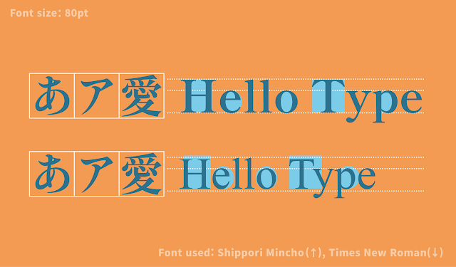

Japanese typeface designers call the Latin script section of their projects the “Subordinate Latin.” The typical
Latin typeface has glyphs with varying proportional widths, but Kanji are designed to fit within a square space
which means they are much wider than most Latin letterforms. This means a typical Latin font will look much too
narrow when mixed in among Japanese characters. To allow Latin to blend with the other scripts in Japanese text,
Latin letterforms are modified to be slightly wider and have shorter ascenders and descenders and
bigger
counters.
In addition to this adjusted Latin, [some] Japanese fonts also include a “full width” Latin design.

Japanese Subordinate Latin (top) compared to Times New Roman (bottom)
Like monospace fonts, fullwidth characters occupy the same horizontal space regardless of their natural width.
Unlike true monospace fonts, full-width only affects certain characters (mainly ASCII character set letters, numbers, and punctuation), so it
doesn't guarantee that all characters in the text will have the same width.
[a] This is the article's <body> font stack. ⤣ [b] A typical Latin font for comparison. ⤣ [c]
Note that Noto [Serif|Sans] JP is just
the Google Font version of Source Han [Sans|Serif],
but as it's a Google Font, doesn't include font-variant-east-asian: full-width /
font-feature-settings: 'fwid' or font-feature-settings: 'hwid' . ⤣ [d]
Unlike all other listed fonts, Noto [Serif|Sans] JP's CJK characters remain fullwidth
with the application of font-feature-settings: 'hwid'. Odd. ⤣